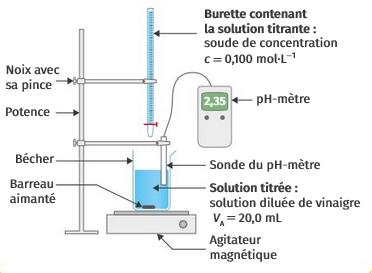
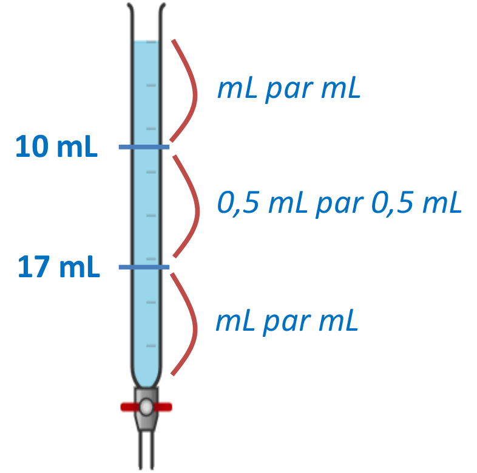

AE 3 : Évolution des quantités de matière pendant un titrage
Le vinaigre est une solution aqueuse d'acide éthanoïque (appelé aussi acide acétique) de formule CH3CO2H. Ses propriétés acides en font un excellent anticalcaire, détartrant, désinfectant ou encore désodorisant. Il peut ainsi remplacer bon nombre de produits ménagers, comme les anticalcaires et antitartres, les produits pour laver les vitres ou pour récurer, l'assouplissant ...
Problématique : Quelle est la concentration d'acide éthanoïque dans les vinaigre ?
Détermination expérimentale par titrage avec suivi pH-métrique
| Document |
Matériel |
Lorsque l'espèce à titrer possède des propriétés acides, on la fait réagir avec une espèce titrante basique (et réciproquement). L'espèce à titrer étant progressivement consommée, le pH du milieu varie. Le titrage par suivi pH-métrique consiste à suivre l'évolution de pH au fur et à mesure de l'ajout de solution titrante. Cette évolution permet de repérer l'équivalence et ainsi de déterminer la quantité de matière ou la concentration initiale de l'espèce titrée.

|
- 3 béchers
- une fiole jaugée de 50 mL et une de 100 mL
- une burette graduée de 25 mL
- des pipettes jaugées de 5 mL et de 20 mL
- une propipette ou une poire à pipeter
- une pipette pasteur + un petit bécher en plastique
- un agitateur magnétique (barreau aimanté au bureau)
- un pH-mètre
- du papier filtre
- un ordinateur équipé de Latis Pro
- du vinaigre blanc à 8 %
- solution d'hydroxyde de sodium de concentration cB = 1,00×10-1 mol·L-1
- solution tampon de pH = 7 et pH = 4
- pissette d'eau distillée
|
S'approprier
- Montrer que l'acide éthanoïque est un acide au sens de Brönsted.
- Donner le couple acide/base auquel il appartient.
- Identifier le réactif titrant et donner le couple acide/base auquel il appartient.
- En déduire la réaction support du titrage.
-
- Quelles sont les deux grandeurs que l'on mesure lors d'un titrage par suivi pH-métrique ?
- Prévoir de quelle manière va évoluer le ph au cours de cette transformation. Expliquer.
Réaliser
-
- Avant d'être dosé, le vinaigre commercial doit être dilué 20 fois. Proposer une explication.
- Choisir, parmi le matériel disponible, la verrerie utile pour réaliser cette dilution.
| Matériel |
|
- Réaliser la dilution
- Étalonner le pH-mètre en suivant le mode opératoire indiqué sur la fiche
- Prélever 20 mL de vinaigre dilué et les placer dans un bécher
- Rincer la burette avec la solution titrante, puis la remplir
- Mettre en place le montage de titrage
- Ajouter progressivement (voir la figure ci-contre) la solution titrante et noter la valeur du pH une fois stabilisé.
|
 |
- Décrire l'évolution du pH au cours de ce titrage. Est ce en accord avec les prévisions de la question 3 ?
L'équivalence intervient au milieu de la brusque variation de pH. On peut déterminer le milieu de ce saut de pH à l'aide d'une méthode graphique appelée méthode des tangentes.
- Appliquer la méthode des tangentes à la courbe précédemment obtenue (clic droit, puis parcourir la courbe) et relever le volume VB,E de solution titrante versé à l'équivalence.
Analyser et Raisonner
- Répondre à la problématique
Valider
- Relever les valeurs de concentration obtenues par les différents groupes.
| Groupe |
1 |
2 |
3 |
4 |
5 |
6 |
7 |
8 |
9 |
| c (mol·L-1) |
|
|
|
|
|
|
|
|
|
- À l'aide d'un tableur ou d'une calculatrice, déterminer la valeur moyenne c et l'incertitude u(c).
Rappel :
L'incertitude pour une série de mesure se calcule comme : $$u(X) = k \cdot \frac{\sigma}{\sqrt{n}}$$
avec k : coefficient dépendant de n et du niveau de confiance, souvent k = 2 pour 95% de confiance ;
σ : l'écart type déterminé comme étant :
$$σ = \sqrt{\sum {\frac{|x_i - \overline{x}|^2}{n-1}}}$$
n : le nombre de valeurs obtenues pour x.
- Présenter le résultat obtenu par l'ensemble de la classe sous la forme $$c = \overline{c} \pm u(c)$$.
Détermination par le calcul
Le degré du vinaigre
Le vinaigre est une solution aqueuse d'acide éthanoïque. Le degré indiqué sur les bouteilles correspond à la masse (en g) d'acide éthanoïque pour 100 g de vinaigre. Le vinaigre ménager a un degré environ deux fois plus important que le vinaigre alimentaire.
- À quelle grandeur physique du cours, le degré du vinaigre correspond-t-il ?
- Déterminer la concentration en acide éthanoïque du vinaigre à partir de soin degré et de sa densité. Expliquer chaque étape de la démarche.
- Le résultat obtenu par le calcul est-il cohérent avec le résultat obtenu par l'expérience?
Données :
- Masse molaire de l'acide éthanoïque : M(CH3COOH) = 60,0 g.mol-1
- Densité du vinaigre commercial à 20°C : d = 1,02